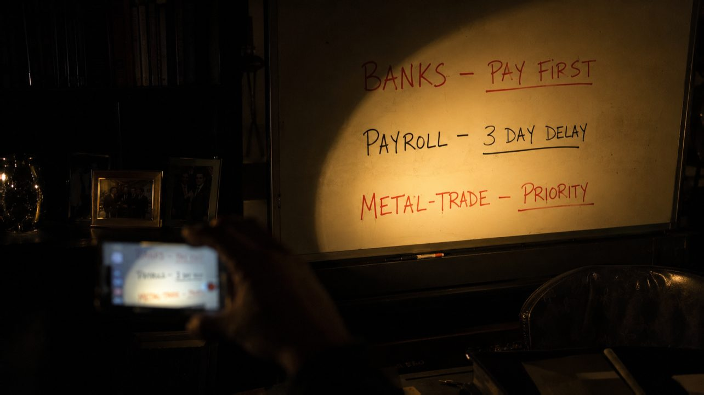

← Цикл «Финансовая архитектура» · 7 из 7
Дневник CFO: Неуниверсальный рецепт или как пережить внезапную потерю 80% выручки

Survival Mode: Триаж в первые 48 часов
Хороший диагност не верит одному анализу. Он почти всегда неточен. Не потому, что метод плохой или лаборант «безрукий», а потому что между моментом забора крови и временем, когда врач смотрит в бланк, пациент успевает измениться. Наш подневный план Cash Flow две недели показывал стабильный пульс. Стабильный — потому что обновлялся раз в неделю. Это была не диагностика. Это был протокол исследований трёхдневной давности, выданный за состояние живого пациента прямо сейчас.
Среда, 11:00. На мониторе — обычный ритм: график платежей на две недели вперёд. Сначала проценты банкам, потом зарплата, дальше налоги и аренда, и наконец трёхуровневая очередь оплат поставщикам по приоритетам — в самом низу, по остаточному принципу, и в эту неделю им не причиталось вообще ничего. Резервы на месте. Есть существенные остатки на овердрафте. Система выглядит исправной.
11:15. В кабинет входит руководитель продаж. Не идёт — почти вбегает. Говорит громко, почти кричит от обиды. Вчера этот же человек докладывал, что график поступлений стабилен.
— Денег от «Тихоокеанского ритейла» не будет. Ни сегодня, ни завтра. — Обещали заплатить вчера. Это был их день платежа. У них каскад. Им самим не перевели. Теперь ждут оплату в конце квартала. Минимум через 37 дней.
Дело даже не в задержке. Дело в том, что этот платёж давал 80% входящего потока на две недели. И теперь он исчез. Внезапно. Без предупреждения.
Представьте операционную в разгар сложной операции. Пациент стабилен, приборы показывают норму — и тут во всём здании гаснет свет. Не в операционной — во всей больнице. Проблема возникла не внутри пациента. Проблема снаружи, там, куда хирург не смотрел. В больших клиниках стоит источник бесперебойного питания: он даёт 15 минут, чтобы запустить генератор. Но генератор запускается не сам — его должен подключить человек, который умеет это делать и оказался на месте в нужную минуту. Резерв на бумаге и резерв, который реально срабатывает, — это разные вещи. В темноте у ведущего хирурга два варианта: свернуть операцию и зашить как получится. Или, продолжить оперировать при фонарике и аварийном освещении. Совещание хирурга с анестезиологом происходит тут же - у операционного стола. Всё решают за 15-30 секунд потому, что для большого консилиума времени нет.
Мы продолжаем.
У нас был «источник питания» — овердрафт и резервы. Но он рассчитан на сбой в несколько дней. На две недели его не хватит, да и кредит из него платить нельзя.
Решение ведущего хирурга
Через пять минут — кабинет генерального. Короткое внеплановое совещание. Он предлагает то, что предлагает любой человек в темноте: подождать, пока починят: — Подождём до завтра? Расширим овердрафт. Позвоним их гендиру — десять лет партнёры, должны понять.
CFO, слегка на взводе: — Десять лет партнёрства — это социальное приличие, чтобы нам было приятнее обедать вместе. А договор — это способ не убить друг друга, когда один решает выжить за счёт другого. Они только что решили выжить. И нам пора. Банк списывает тело кредита в четверг до 11 утра. Реестр на зарплату уходит в пятницу. У нас сорок восемь часов, после которых мы сначала получим чёрную метку от банка, а потом прилетят инкассо на счета.
— Что предлагаешь? — риторически спрашивает ГД — Ломаем регламенты и обещания. Будем кроить по живому.
Генеральный молчит. Молчание — это согласие, выданное за раздумье. Начинаю излагать план.
Триаж
Свободных денег больше нет. Есть только то, что держит систему в работе.
— Банки оставляем первыми. Это не просто расходы - это скелет, который держит наши кредитные лимиты и кредитную историю. Зарплату задержим на три дня. — Люди уйдут! — возражает Генеральный. — Люди уйдут — продолжает финик — если компания встанет. Три дня задержки — это цена сохранения рабочих мест на фоне обманутых надежд. Мы объясним это честно. Из ведомости обеспечения сделок — показывает на экран планшета — следует, что есть поставщик «МеталлТрейд». На его комплектующих висит контракт, отгрузка по которому принесёт деньги через 15 дней после отгрузки. Поставка комплектующих через 10 дней, после аванса. Мы не планировали поставщикам на этой неделе вообще ничего, но для него предлагаю сделать внеплановое исключение. Да, мы забираемся в резервы на налоги. И если не случится достаточных поступлений, то мы не сможет их вовремя заплатить — возникнут пени за нарушение сроков оплаты налогов. Кредитование из налогов - очень дорогое и рисованное кредитование, но мы не закрываем старый долг — мы инвестируем в будущее.
Генеральный принимает идею. Делает звонок, и к списку «внеплановых поставщиков» добавляется ещё один. Несколько уточнений и итоговый порядок действий записывается маркером на белой доске. ГД фотографирует записи на смартфон.
Сейчас это уже не график платежей, это протокол сортировки раненных в полевом госпитале. Триаж беспощаден: если попытаться раздать по капле кэша всем, обескровленными окажутся все. Попытка быть «справедливым» и заплатить каждому по чуть-чуть — верный способ оказаться в общей могиле. Мы выбираем только тех, кто позволит системе дышать завтра. Остальные остаются на волю случая.
Совещание закрыто.
Дозировка
Согласованный график — всё ещё бумага. Нужны действия. Менеджеры, которые раньше не любили звонить дебиторам, теперь звонят всем подряд. Не тем, кто должен заплатить завтра. Всем. Даже тем, кто только подписал контракт.
Из опенспейса доносится: — Письмо-подтверждение не нужно. Дадим 3% скидки, если платёжка будет у меня в течение часа. Допник оформим по факту поступления.
К вечеру среды находятся двое, которые уже отправили деньги. Работа будет продолжаться до конца недели: кого уговором, кого «сладким пряником» удаётся убедить заплатить значительно раньше срока. В системе появляется первый литр «крови». Потом ещё чуть-чуть.
Дальше разговор с поставщиками. Здесь всё жёстче: — Нам нужны все десять миллионов. Иначе заказ не запустим. — Мне не нужна цифра, которая закрывает вашу годовую премию, — отвечает начальник закупки тем же тоном, каким финдир говорил с генеральным час назад. Метод заразен быстрее, чем хотелось бы — Мне нужна та сумма, при которой вы сможете стартовать. Сколько вам нужно до пятницы, чтобы не перекрывать нам кислород?
Пауза. Затем — Три до конца недели и ещё два в понедельник.
Договорились. Это «минимальная доза» выживания для обеих сторон.
ГД на утреннем созвоне в четверг сообщает команде: — У нас глубокий кассовый разрыв из-за срыва платежа крупным клиентом. Зарплатную ведомость разобьём на части, первыми пойдут работники первой линии, и будем платить её по мере поступления денег, чтобы минимизировать задержки. Мы управляемы.
Юристу — отдельно: — Никаких устных обещаний от «Тихоокеанского». Претензия — сегодня. В понедельник она на их столе. Мы работаем по регламенту договора, а не по «многолетней дружбе».
Швы
Мы не строим капитальное здание — мы зашиваем пациента в темноте, при фонарике. Платежи сошлись, но запас прочности не проверен: пропажу следующего поступления мы выдержим только если успеем заметить его раньше, чем в этот раз.
Повторная проверка каждого транша. План сшит из лоскутов, швы кривые и со шрамами, но дыр нет, и пациент дышит сам.
Эпикриз
Клиент так и не заплатил в срок — суды тянулись ещё полгода. Если бы мы ждали его денег, и не отреагировали жёстко, нас бы накрыла лавина каскадных неплатежей.
Дошить пациента при фонарике — не повод для гордости. Это означает, что в больнице нет генератора, или нет человека, способного его включить вовремя. Задержка зарплаты, давление на дебиторов, ручная хирургия поставок — это сильнодействующий яд. В первые 48 часов он спасает жизнь. Если он становится вашей обычной практикой — вы не управляете финансами. Вы постоянно оперируете на грани смерти и называете это «стилем работы».
И главный вопрос пришёл только в субботу: почему мы узнали о каскаде у клиента в день, когда деньги не пришли, а не за месяц до этого? Почему наш монитор молчал?
Потому что у нас не было кардиографа. У нас была разовая съёмка раз в неделю, и между снимками пациент успевал пережить инфаркт незаметно для всех.
В следующей серии: почему ручной мониторинг — это диагностика по фотографии, а не по живому пациенту, и как построить систему, которая покажет аритмию за месяц до остановки сердца.
Какие кейсы были в вашем кризисном управлении?